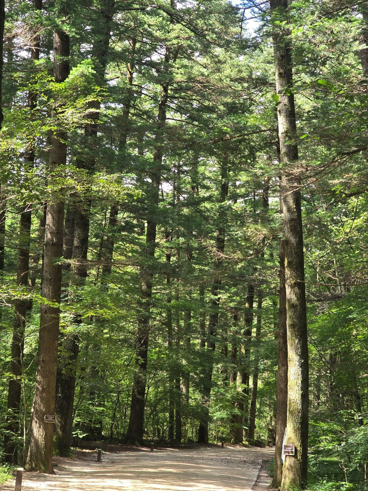
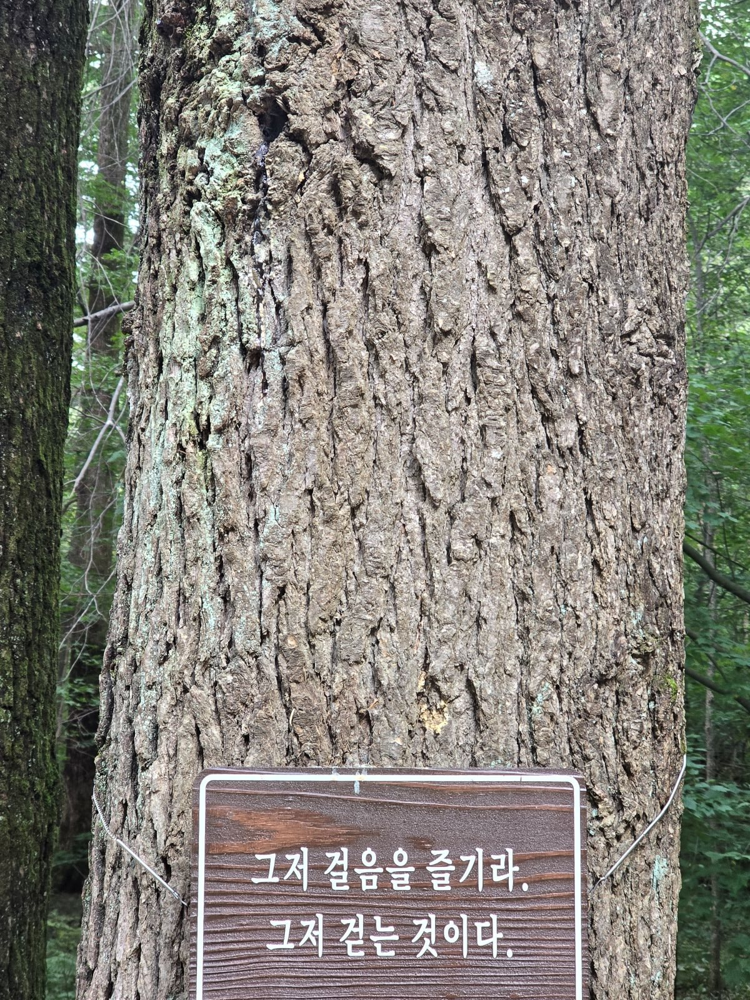

Cognitive Mind: Mindfulness & cognitive well-being
A small student-led school club where we explored attention, mindfulness, adolescent mental health, and questions about how the mind works.
Status: Approved in February 2026 and ongoing as of October 2026.
Members: Three core members, including me. Other students sometimes joined individual activities voluntarily.
My role: I founded the club, wrote and revised the proposal, prepared questions and activities, led the meetings, and kept notes about what we discussed.
1. Beginning and school approval
I began thinking about Cognitive Mind in fall 2025 while I was taking Moral & Ethical Dilemmas. The course led me to think more about adolescent mental health, stress, attention, and the different ways students respond to similar situations.
I first proposed Cognitive Mind before winter break in 2025. My first plan was broad, and I realized that I needed to explain more clearly what we would do and what the club would not try to do.
By January 2026, I had also completed Paul Bloom’s Introduction to Psychology on Coursera. The course gave me more ideas about attention, language, perception, and the connection between the mind and body. Ideas and questions from both courses influenced how I revised the club proposal and how I developed some of the early content for the Global Mindfulness Hub.
I discussed the club idea with other students and asked a teacher to serve as the faculty advisor. The school approved Cognitive Mind on February 11, 2026. I was also invited to introduce the new club at the school’s Morning Gathering.
From the beginning, I described the club as an informal place for practice and discussion, not therapy or formal psychological research. Participation in discussions was voluntary, and I recorded comments without using members’ names.
2. Our meetings
After the club was approved in February, we began meeting in the Peer Tutoring room in the library. Our meetings usually took place on Fridays, although spring break and other school schedules sometimes interrupted them. Most meetings combined a short mindfulness or meditation practice with a question about concentration, language, mental health, or daily school life.
We began with simple questions: When did I feel most focused today? When do I lose focus? What helps me return? Members talked about sleep, difficult classes, deadlines, phone use, noise, and stress. Their responses were often different, even when the question was the same.
One meeting focused on the language we use for thinking. Our members came from different language backgrounds. We talked about whether using English, Korean, or Chinese changed how quickly we understood schoolwork or how we approached an idea. We did not reach one conclusion, but the discussion made me more curious about language and cognition.
We also tried short breathing and meditation activities. Afterward, members described different reactions. Some felt calmer or more able to begin their work. Others noticed that tiredness, stress, or another concern still affected their attention. I learned that the same short practice did not create the same experience for everyone.
Because I continued taking Moral & Ethical Dilemmas through May 2026, questions from the course often became part of our club discussions. We talked about experiences already familiar to students, including academic pressure, sleep, phone use, stress, and difficulty concentrating.
On May 22 and May 29, we focused more directly on adolescent mental health. We did not try to diagnose one another or give psychological advice. We shared our experiences and discussed why students might respond differently to similar pressures.
An informal activity about concentration
For one larger activity, nine students tried working under three different conditions: loud music, quiet ASMR, or a short breathing practice before beginning. This was not a controlled experiment, and I did not treat their comments as scientific data.
The responses were mixed. Some students found loud music distracting, while one said that it gave them energy at the beginning. Some felt that ASMR helped them settle down, but others were still affected by worry or the desire to check YouTube.
The breathing group also had different experiences. Some felt more prepared to work, while others said that lack of sleep or an approaching deadline mattered more.
After hearing all the different answers, I did not think one condition could explain concentration. Environment mattered, but sleep, stress, motivation, habits, and personal differences also mattered.
3. Meditation, music, and art
During our early meetings, I introduced different ways people practice meditation. We listened to examples of meditation music from Korea and India, including singing-bowl recordings. After listening, we talked about what the sounds brought to mind and whether they changed our attention or mood.
One of the core members was an artist who had made Buddhist-themed work. This member said that meditation was also helpful while making art.
I had mostly thought about meditation for attention and stress, so I found it interesting that it could also help someone make art.
We used some ideas from Christopher Willard’s work and tried short mindfulness and breathing practices. I also introduced Korean temple stays and meditation experiences. I wanted members to see that mindfulness could appear in different forms: a short breathing activity at school, music, walking, art, an app, or time spent at a temple.
4. Woljeongsa and my family
My family is not Buddhist, but Woljeongsa’s fir-tree forest is one of our favorite places. During summer and winter breaks, we often walk through the forest together. We like the tall trees, the quiet path, and the feeling of slowing down there.
I told the club members about walking barefoot in the forest and seeing meditation messages along the path. I also showed a video from BTN, a Korean Buddhist television network, about the Woljeongsa–Woodenfish global meditation practice program.
We watched the video together and talked about the international participants who came to Woljeongsa for meditation and experiences of monastic life. Seeing young people from different countries take part made the program feel more real to us. Because we were still in high school, some of us talked about applying for a program like it after entering college.
This summer, I returned to Korea but was too busy to visit Woljeongsa before leaving again. I still wish I had made time for one walk through the fir-tree forest.


Woljeongsa’s fir-tree forest and a message along the path: “Just enjoy walking. Just walk.” My family often visits the forest during school breaks.
5. Using the Global Mindfulness Hub in September
I worked on the club and the Global Mindfulness Hub during the same period, so they influenced each other. Some questions from Moral & Ethical Dilemmas and Introduction to Psychology also became topics I explored in the Hub. In September, I could bring the four mindfulness apps I had made to the club and try them with other students.
By that time, I had also begun taking AP Psychology. Topics such as attention, stress, and emotion connected naturally with our earlier discussions and gave me new questions about why the same practice could feel different for different people.
We tried Breath Counting, Body Scan, Lotus, and Quiet Time. The activities did not give scores or measure intelligence, memory, or mental health. We used them as simple starting points for pausing, noticing our reactions, and talking about what helped or did not help us focus.
In our earlier meetings, I had usually brought questions, recordings, websites, videos, and ideas from courses or books. In September, I could also bring the interactive mindfulness apps that I had designed and built for the Hub.
6. What I learned
Cognitive Mind has remained a small club. It did not become a large organization, and our short activities did not produce scientific conclusions. However, the small size made it easier for members to talk openly and for one question to lead to another.
Life at school as an international student was often busy. The club gave me time to sit with friends and talk about things we usually did not have time to discuss. I was glad that we could talk not only about assignments and grades, but also about attention, language, stress, art, meditation, and what helped us feel calmer.
Sometimes I wanted to explain why a person focused well or why a practice helped, and I often prepared too much before a meeting. The discussions showed me that I often did not know enough to give one answer. Many things could matter, including where someone was working, how much sleep they had, how stressed they felt, the language they were using, and why they wanted to focus.
Later, I learned that I did not have to explain everything. I could introduce an activity, ask a question, and listen. Sometimes a member’s comment gave me a new question that I had not planned.
In our early meetings, the club gave me a place to share ideas I was learning from courses, books, music, and meditation practices. By September, it also became a place where I could bring something I had made myself. When another student became curious about an activity, I felt that making and sharing it could be as important as studying it by myself.
7. Next steps
After I shared the Global Mindfulness Hub with Christopher Willard, he encouraged me to share it with students instead of keeping it only as an individual project. Using the Hub activities in Cognitive Mind became my first small step toward doing that.
After I revise the parts of the Hub that are still unclear, I hope to introduce it to other schools or community organizations if they are interested. Christopher Willard also said that I could contact him if he could be helpful. Nothing has been arranged, but after speaking with my school, I may ask whether a short virtual conversation with students could be possible in the future.